Click the "White Mushroom" logo at the top to return to this page for review.

Character Introduction
Yang Liqiang: The owner of Tian Qing Inn. He is enthusiastic and talkative. Having experienced multiple failed business ventures, he never gave up and finally achieved a career turnaround with the inn. He is a middle-aged man who persisted through real-world setbacks to achieve hard-earned success.
Lei Chuan: A local of Leiqishan who lives long-term at Tian Qing Inn. Easygoing and enjoys chatting with guests, occasionally accompanying them on outings. An important figure connecting the inn to the outside world.
Liu Jiangtao: Quiet and reserved, living year-round at the inn. Frequently travels alone to surrounding areas for investigations and visits. Keeps a low profile and seems to be secretly researching something unknown.
- Some character background information holds practical reference value for solving puzzles.
- All characters above have corresponding accounts in the Tian Qing Inn forum.
By browsing the Tian Qing Inn forum and related pages, you need to immerse yourself in fragmented information and narrative clues to piece together Xie Yingwen's true whereabouts and the secrets behind the inn's facade.
- Gather clues about the disappearance of your boyfriend, Xie Yingwen.
- Uncover the truth hidden behind the inn's "natural healing" facade.
- Find your missing boyfriend.
This is an exploration and interpretation game with no fixed path; entering correct keywords allows you to hack into hidden pages. While reading each regular page, pay attention to unusual word choices, eerie tones, or unnatural structures—they might all be "keywords."
- You need to search for these keywords throughout the website and enter them in the top search box, or attempt to hack into forum users' profile pages to gradually uncover deeper content and the truth.
- Clicking the "white mushroom pattern" on the official website returns you to this page to review the investigation guide.
- You can click "Operation Log" on the homepage of the official website to backtrack and view all successfully hacked pages, as well as check your puzzle-solving progress. Pages discovered and collected closer to the total number mean you are closer to the truth.
- Some pages may experience access abnormalities due to hacking attempts; you need to find ways to resolve these anomalies.
- Average playtime is about 1-2 hours, can be done in segments according to your own pace.
The game should be played in fullscreen mode; otherwise, display issues may occur.
- Not only unfamiliar proper nouns are clues. Pay attention to ordinary, repeated, or seemingly redundant words as well.
- No programming skills are required; most clues come from visible website content.
- If a piece of content seems logically disjointed, overly emotional, or excessively embellished, it might be a deliberately embedded implicit trigger.
- Computer use is recommended; tablets may experience display deviations or layout issues.
- Enter only 1 keyword at a time when searching (keywords support Chinese and English, but not multiple words, spaces, numbers, or special characters).
- The game does not contain jump scares or gory imagery.